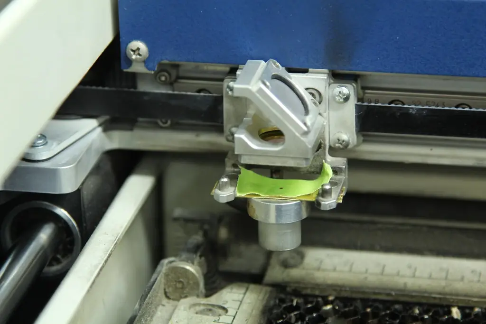

Tornos CNC
Com ferramenta acionada.
Projeto demonstrativoA Torvix Industrial é uma empresa fictícia. Marca, textos e site foram criados do zero pela Tirvo. As fotos vêm de bancos de imagem livres (créditos).
Conhecer a TirvoA Torvix fabrica componentes usinados, peças em chapa, estruturas soldadas e conjuntos montados para fabricantes de máquinas e equipamentos. Engenharia própria, três turnos e rastreabilidade de cada lote.
Cinco frentes de fabricação sob o mesmo teto. Menos fornecedores, menos frete entre etapas e um responsável só pelo prazo.
Todas as soluçõesPeças torneadas e fresadas em aço, inox, alumínio e ligas especiais, com tolerâncias de até 0,005 mm.
Corte a laser fibra e dobra CNC de chapas, do protótipo à série, com aproveitamento otimizado.
Estruturas, bases e reservatórios soldados por equipe certificada e células robotizadas.
Conjuntos mecânicos montados, testados e embalados prontos para a sua linha.
Desenvolvimento, otimização para fabricação e protótipos com a engenharia própria.
Escolha um processo para ver capacidades e dados técnicos.

Peças de geometria complexa produzidas em centros de 5 eixos, com programação CAM própria e inspeção dimensional em cada lote.

Corte rápido e limpo de chapas finas e grossas, com encaixe automático das peças para reduzir sobras de material.

Dobradeiras com controle de ângulo e trocas rápidas de ferramenta para lotes pequenos e grandes.

Células robotizadas para séries e soldadores qualificados para peças especiais e estruturas de grande porte.

Pré-tratamento, pintura a pó e cura em estufa, com controle de camada e aderência por lote.
Cada máquina envia dados de produção. Eficiência, prazo e qualidade são acompanhados por turno.
Eficiência global dos equipamentos, média da fábrica
Turno B · 14h às 22h
Dados fictícios, criados para este projeto demonstrativo.
Um fluxo pensado para não haver surpresa no prazo nem na qualidade.
Análise do desenho, material e volume.
até 48 h úteisAjustes para fabricação e programação CAM.
2 a 5 diasPeça aprovada com relatório dimensional.
aprovação do clienteSérie com controle por lote e por turno.
três turnosEmbalagem técnica e transporte programado.
todo o BrasilCapacidade para protótipos, lotes médios e séries contínuas.
Ver lista completaFresamento de 3 a 5 eixos.
Com ferramenta acionada.
De 6 a 12 kW.
Até 320 toneladas.
Agrícola, energia, mineração, alimentos, ferroviário e movimentação de cargas.
Clientes fictícios, criados para este projeto demonstrativo.
Envie o arquivo técnico, o material e o volume. A engenharia responde com prazo e condições em até 48 horas úteis.
Acesso rápido à BR-476 e ao contorno de Curitiba para coleta e entrega.